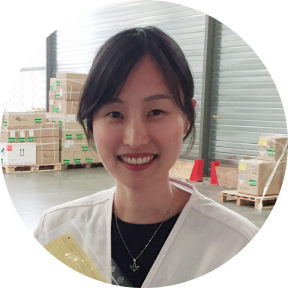
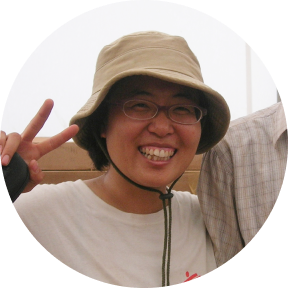
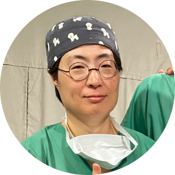

-
현장에 나갈 때마다 새로운 경험을 하게 됩니다. 새로운 환경에서 나 자신을 발견하고, 다른 이들을 보면서 배우게 되는데요.
매번 새로운 사람들과 색다른 환경을 마주하며 긍정적인 영향을 받기 때문에 이 ‘새로움’이 다음 활동을 가게 만드는 원동력이
돼요.봉선아 활동가
기술직
-
제가 가진 전문성과 역량으로 구호활동에 참여할 수 있다는 사실이 큰 보람이 됐습니다. 현장 생활을 하며 국경없는의사회가
실제로 가장 멀고, 가장 험하고, 가장 필요한 곳에서 일하고 있다는 걸 느낄 수 있었습니다.황선미 활동가
소송행정직
-
국경없는의사회에서 일하면 온전히 환자만 생각할 수 있는 환경에 놓이게 됩니다. 사기업에서 일하는 것보다 자유로운 점이
있다고 할 수 있죠. 저는 일에 있어 흥미와 보람을 매우 중요하게 여기는데, 이를 유지할 수 있어 감사하게 생각해요.최정윤 활동가
약사
-
의사로서 사는 삶이 재미가 없어 (웃음) 국경없는의사회 활동을 시작하게 되었어요. 활동가로서의 삶이 이전의 삶보다 훨씬 더
만족스럽기에 벌써 10년도 더 넘게 계속하고 있어요. 저마다 다른 이유와 동기를 가지고 계시겠지만 꼭 한 번 참여해 보시면
좋겠습니다.이효민 활동가
마취통증의학과 전문의
-
봉선아 활동가
기술직
-
황선미 활동가
소송행정직
-
최정윤 활동가
약사
-
이효민 활동가
마취통증의학과 전문의